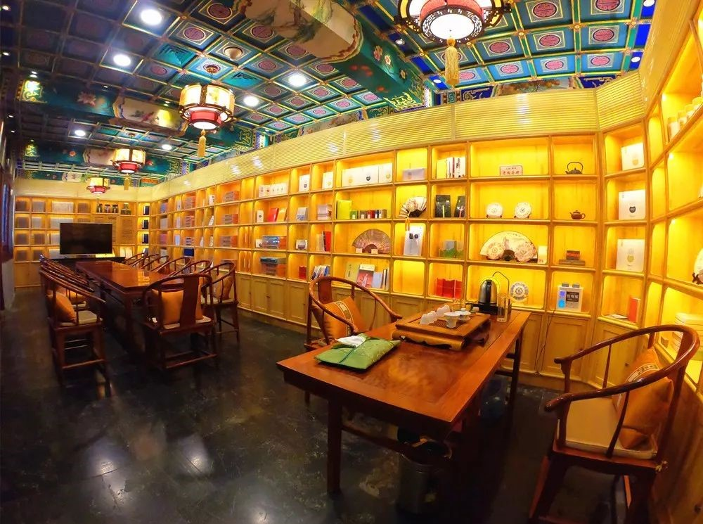

南池子老戏楼变身“城市书房”
来源：北京东城
走进绿树成荫的菖蒲河公园，绕过一条静谧的小路，东苑戏楼隐藏在一片四合院式的建筑群中。今年4月，经过修缮恢复和全新业态植入，这座位于南池子历史文化保护区的传统戏楼再次对外开放，从闲置的老戏楼变身成融文化、艺术、生活空间于一体的“城市书房”。
传统戏台传承“百家戏”
推开沉重的朱漆大门，走进回廊环抱的中式庭院，一株海棠树枝叶正旺，周围盛开着五颜六色的小花。
“这里曾经长期闲置，院子里长满了杂草。”华戏文化相关负责人介绍，在相关单位的支持下，具有丰富文创演艺经营经验的华戏文化于去年3月接手东苑戏楼，经过一年的修缮恢复后引入了全新的业态，将其打造成融文化、艺术、生活空间于一体的“城市书房”，并于今年4月对外开放。
古色古香的建筑中央坐落着传统戏台，10多米的挑高空间内，装饰着云纹等京剧传统元素的戏台呈现“凸”字形，戏台正中央的屋顶上方有一个半球形的圆拱，绘画着《红楼梦》等中国传统故事。
“过去的老戏台没有扬声设备，圆拱可以起到聚拢声音的作用，‘凸’字形舞台可以使表演者更接近听众。”华戏文化的相关负责人介绍，重新开放的戏台目前提供京剧《贵妃醉酒》、昆曲《游园》等经典戏曲表演，未来还将增加黄梅戏等戏种，成为传承中国戏曲文化的“百家戏台”。
打造24小时“城市书房”
除了戏曲，东苑戏楼还引入了两家特色书店，丰富文化内涵。
台对面的主宾厅是贵客听戏的地方，如今在此基础上开设了“三希堂线装本古籍书店”。《二十四史》《开城石经》《红楼梦》……一本本影印版线装古籍整齐地摆放在木制书架上。
与台北故宫独家合作的影印版四库全书被收藏在高大的楠木书柜中，按经、史、子、集四类摆放，书籍从选料到装订都极为细致，书本页面为丝绸质地，纸张采用安徽宣纸，装书本的盒子选用香樟木，有防虫防潮的效果。
穿过种着百年枣树的庭院，来到位于戏台背后的另一个阅读空间——舞美书店，这家中国首家舞美艺术书店共有200多种、1500多册图书，内容涵盖舞台美术作品集、画集、灯光设计作品集、舞美学术理论等，同时藏有多种绝版书籍以及反映不同时期国内外舞美发展动态的出版物。
“我们力求为海内外人士创建长安街边一片温馨的书荫。”华戏文化相关负责人介绍，目前东苑戏楼的开放时间是周一至周日早上10：00至下午6：00，未来计划24小时开放，将是首都核心区24小时有灯光、书香、茶香的城市文化空间。
设计京剧主题伴手礼
戏台两侧的东西厢房被设计成茶文化艺术空间，客人可以在这里品茶、学习茶艺。
根据茶艺师对茶叶的理解，菜单上的茶品分为四大名旦、七大名曲、梨园茗家主题，对应大红袍、金骏眉、古树普洱、金丝滇红、白毫银针等中国茗茶。
据了解，这些茶叶全部产自云南普洱，获得欧盟、美国、日本、中国有机认证，其中普洱茶饼被制作成京剧主题的伴手礼。因为优质的茶叶和周到的服务，茶文化艺术空间被商务部中国茶馆经营协会评为“中国五星级茶馆”。
在弘扬中国传统文化的同时，东苑戏楼还推出了以戏曲为主题的“艺术下午茶”，主营各类法式甜点和茶叶饮品。其中两款蛋糕以京剧头冠上的绒花和服饰上的云纹、蝴蝶为图案设计而成，口味有巧克力和普通奶油；绘有京剧脸谱的饼干造型可爱，可以做成伴手礼，但需要提前预订；用食用色素3D打印的京剧主题月饼则要等到中秋上市。